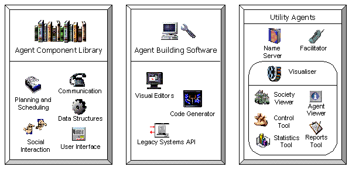
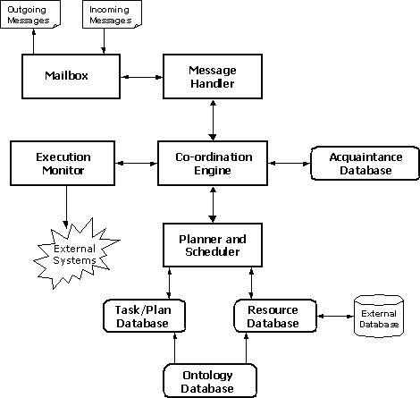
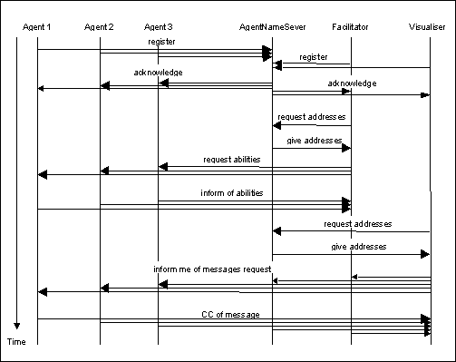

The Zeus Agent Building Toolkit |
Technical Manual |
| Contents | Introduction | Zeus Philosophy | Zeus Architecture | Communication | Coordination | Planning and Task Execution |
External Applications |

Figure 3.1: Components of the ZEUS agent building toolkit.
The ZEUS toolkit consists of a set of components, written in the Java programming language, that can be categorised into three functional groups (or libraries) as depicted in Figure 3.1: an agent component library, an agent building tool and a suite of utility agents comprising nameserver, facilitator and visualiser agents. In the following subsections, we describe in turn the ZEUS agent component library, the agent building approach and its associated environment, and the suite of utility agents.
The Agent Component Library is a collection of classes that form the building blocks of individual agents. Together these classes implement the application-independent agent-level functionality required of collaborative agents. The contents of this library address the issues identified in Section 1 including communication, ontology, co-ordination (or social interaction).
For communication the Agent Component Library provides:
Next, for reasoning and multi-agent co-ordination, the Agent Component Library provides:
The functioning of the planner and co-ordination engine are influenced by the agent’s knowledge context, i.e. its available resources and competencies, its organisational relationships with other agents and its available co-operation strategies. Thus, to support these two components, the Agent Component Library also provides:
Together, the components of the Agent Component Library enable the construction of an application-independent generic ZEUS agent that can be customised for specific applications by imbuing it with problem-specific resources, competencies, information, organisational relationships and co-ordination protocols. Figure 3.2 shows the architecture of the generic ZEUS agent that is not too dissimilar from other collaborative agent architectures in the literature.

Figure 3.2: The Architecture of the generic ZEUS agent
As Figure 3.2 depicts, the generic ZEUS agent includes the following components:
In the next subsection, we describe a typical use case scenario to illustrate the flow of information and control in the generic ZEUS agent.
Imagine a message from another agent is received by the agent’s Mailbox, which passes the message to the Message Handler for processing. On receipt of the message, the Message Handler interprets it as a request to achieve a goal. Hence, it forwards the message to the Co-ordination Engine to determine whether to achieve the goal and if so, to devise and co-ordinate an appropriate plan of action.
The Co-ordination Engine decides to attempt the goal, and invokes the Planner to construct a plan to achieve the goal. The Planner creates a plan for the goal, utilising action descriptions from its Plan Database, and reserving the resources that are required by the plan and available in its Resource Database. However, the Planner finds that there are some other resources that are required by the plan, but which are not available in its Resource Database, and which it cannot produce. Thus, it calls the Co-ordination Engine to seek external assistance in producing those resources.
The Co-ordination Engine then begins to attempt to contract out the task of providing the required resources at the required time. To do this, it checks its Acquaintance Database for the names of other agents that it believes can produce the required resources. Finding no acquaintance agents with the appropriate abilities, the Engine uses the Mailbox to send a message to a known facilitator, requesting a list of all “active” agents with the required abilities. On receipt of a reply from the facilitator, the Mailbox forwards the reply message to the Co-ordination Engine (through the Message Handler).
Now, given the list of agents with the needed abilities, the Co-ordination Engine first stores this information in its Acquaintance Database, and then proceeds to send messages to the agents, asking them to bid for a contract to produce the required resource. Again the outgoing messages are sent through the Mailbox and their replies returned to the Co-ordination Engine via the Mailbox and Message Handler.
Once all contractor agents have returned their bids for the tasks, or the reply deadline has expired, the Co-ordination Engine passes the returned bids to the Planner, which selects suitable contractors for providing the required resources. The suitability of each bid depends on factors such as its cost, and how well it fits in with the overall plan to achieve the original goal. With the bid selections made and the plan completed, the Planner returns to the Co-ordination Engine a list contractor agents to whom send contract award messages should be sent, and another list to whom the Engine should send bid rejection messages.
However, before sending out the contract award and bid rejection messages, the Co-ordination Engine first sends a message to the agent that originally asked it to achieve the goal, informing the agent that it can perform the goal and the cost of doing so. Next, the Engine waits for a response to its bid. If a favourable response is received, it then sends out the contract award and bid rejection messages to its own contractor agents and informs the Planner that the plan for the goal should be executed when appropriate. If, on the other hand, an unfavourable response was received, bid rejection messages are sent out to all contractor agents, and the Planner is told to cancel the plan.
Once a scheduled plan is ready for execution, the Execution Monitor executes the actions specified in the plan by invoking the external program declared in each action description. If the entire plan is successfully executed, the final results are sent through the Co-ordination Engine and Mailbox to the agent that requested the goal.
As can be seen from the use case scenario, the components of the Agent Component Library work together to provide the necessary agent-level functionality. For instance, the Mailbox and the Ontology Database facilitate communication. The former provides agents with the ability to send and receive messages in a ‘standard’ format, whilst the latter enables each agent to understand what other agents communicate to it. Once agents can communicate, we can raise the level of abstraction to the co-ordination level (or social interaction), wherein bargaining and negotiating is possible. This is realised via the Co-ordination Engine employing various defined co-ordination protocols. It is also clear from this example that co-operative problem solving between agents in task-oriented domains requires some planning and scheduling capabilities.
In the next section, we describe the second major sub-library of the ZEUS toolkit — the agent building software.
The principle underlying the ZEUS toolkit is that application-specific agents can be constructed by configuring the generic ZEUS agent, and equipping it with the necessary application functionality. To facilitate rapid development, the ZEUS toolkit provides high-level agent development approach that hides the complexities of the Agent Component Library from the agent developer. This approach has two key aspects:
The Agent Creation Methodology is crucial to reducing the time taken to develop agents with Zeus. It is described in two dedicated documents: the Role Modelling guide, which deals with the preliminary analysis and design of an agent application, and the Realisation guide, which describes how a design can be translated into a working application using the Zeus tools.
This section will briefly mention the facilities of the ZEUS Agent Generator, the suite of integrated editors that support the ZEUS agent design approach. To facilitate ease of use, the editors have been designed to enable users to interactively create agents by visually specifying their attributes. The current suite of editors includes:
Thus, in order to generate the code for a specific application, the Generator tool inherits code from the Agent Component library, and integrates it with the data from the various visual editors. The resulting programs can be compiled and executed normally.
It is standard practice for a distributed society of agents to have an infrastructure of utility services. The ZEUS suite of utility agents consists of a nameserver and a facilitator agent that facilitate information discovery, and a visualiser agent for visualising or debugging societies of ZEUS agents. A ZEUS agent society may contain any number of these utility agents, with at least one nameserver agent. All three utility agents are constructed using the basic components of the Agent Component Library, and are in fact simplifications of the generic ZEUS agent.
Nameserver agents have only a Mailbox and Message Handler, the components needed for receiving and responding to agents’ requests for the addresses of other agents. In addition, nameserver agents maintain a society-wide clock; thus, on initialisation, an agent registers with a nameserver and synchronises its internal clock to that of the nameserver. However, although a society may contain multiple nameserver agents, only the very first one defines time-zero.
Facilitator agents have a Mailbox and Message Handler for receiving and responding to queries from agents about the abilities of other agents, and an Acquaintance Database for storing the abilities of the agents. They function by periodically querying all the agents in the society about their abilities, and storing the returned information in their Acquaintance Database. Also, individual agents might advertise their abilities to facilitators. Thus, when an agent wants to find other agents that have a particular competence, they can simply send an appropriate query message to a facilitator agent.
Visualiser agents can be used to view, analyse or debug societies of ZEUS agents. They function by querying other agents about their states and processes, and then collating and interpreting the replies to create an up-to-date model of the agents’ collective behaviour. This model can be viewed from different perspectives through visualisation tools supported by the visualiser agents. The current tools include:
The multi-perspective visualisation approach provided by the visualisation tools gives users the flexibility to choose what is visualised, how it is visualised and when it is visualised. The visualisation tools are generally used online, to visualise the interactions in a multi-agent society live, as they happen. However, the society, report and statistics tools can also operate off-line by recording agents’ interaction sessions to a database. Once stored, recorded sessions can be replayed, video-recorder style, using the forward and rewind buttons.
The features of the visualisation tools, and how they can be used to analyse and debug agent systems, are described in the Zeus Runtime Guide.
Consider a small agent society consisting of three ‘task’ agents and the standard three ‘utility’ agents. The interactions that occur between them at start-up are shown in the interaction diagram of Figure 3.3, this shows how the agents, (the vertical dashed lines), interact with each other, (shown by the horizontal arrows). All interactions are achieved through the standard ZEUS message passing mechanism.

Figure 3.3: An interaction diagram of a newly created agent society
Figure 3.3 provides a useful insight into how the agents function. The interactions shown are time ordered, with those at the top occurring before those further down. The direction of the arrows is also significant, as it shows which agent initiated interaction and who responded to it. At this point it may also be informative to consider the intra-agent interactions, i.e. how the component parts of an agent work together. So next we shall consider the design and implementation of the main components of the generic ZEUS agent.
The remainder of this document concentrates on the details of the main processing components of the generic ZEUS agent:
The main design principle underpinning the design of the various components was that the components should permit some form of declarative specification of message processing, co-ordination and planning behaviour. Thus, the behaviour appropriate to an agent should be specified declaratively using the Generator tool and processed accordingly at runtime by the agent. As agent behaviour is declaratively specified, it can be modified dynamically, even at runtime; as a result the generic ZEUS agent functions like an ‘interpreter’ of specified behaviour. The subsequent subsections describe how.
| Contents | Introduction | Zeus Philosophy | Zeus Architecture | Communication | Coordination | Planning and Task Execution |
External Applications |